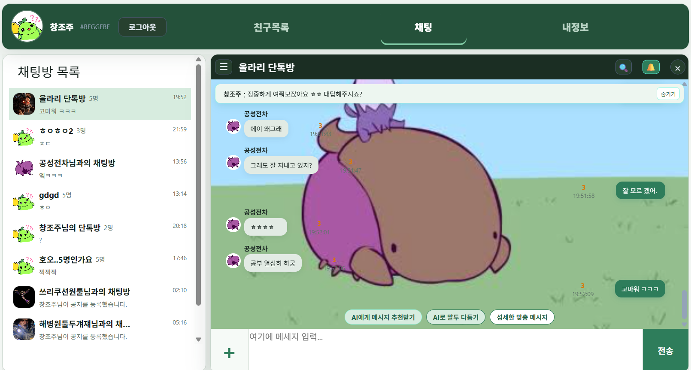
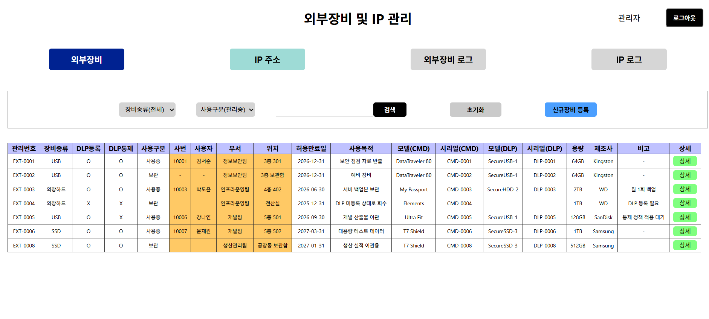
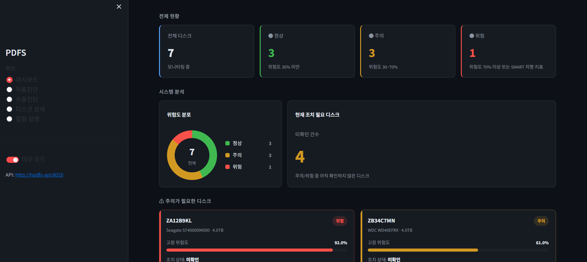
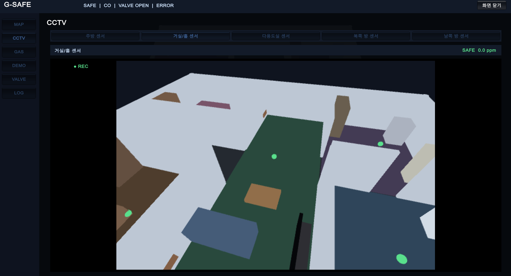

[ 개인 ]
ReactJavaMariaDBKafkaRedis
CastleChat
대규모 메시지 처리 지향 실시간 웹 채팅
5개의 Multi Process 기반으로 연결 유지·검증·영속화의 책임을 분리. Kafka 기반 비동기 DB Write, Redis 채팅 읽음 처리 선반영 + Dirty Flush 배치로 응답 경로에서 DB 대기를 제거하여 상향된 UX 지향 설계.
[ 개인 ]
ReactJavaMariaDBKafkaRedis
대규모 메시지 처리 지향 실시간 웹 채팅
5개의 Multi Process 기반으로 연결 유지·검증·영속화의 책임을 분리. Kafka 기반 비동기 DB Write, Redis 채팅 읽음 처리 선반영 + Dirty Flush 배치로 응답 경로에서 DB 대기를 제거하여 상향된 UX 지향 설계.

[ 개인 : 인턴실무 ]
ReactJavaMariaDB
사내 외부장비 반출입 이력과 IP 자산 추적 시스템.
인턴 기간 중 현업 요청을 받아 개발·운영하였습니다.

[ 팀 ]
StreamlitPythonPostgreSQLRandomForest
SMART 기반으로 저장장치 정보를 얻고, 학습된 ML 모델로 저장장치의 고장을 예측하고 모니터링하는 시스템.

[ 팀 ]
UnityC#PythonRandomForest
Unity 로 공간을 시각화하고, 학습된 ML 모델로 자동으로 누출을 차단하는 가스 누출 방지 시뮬레이션.
